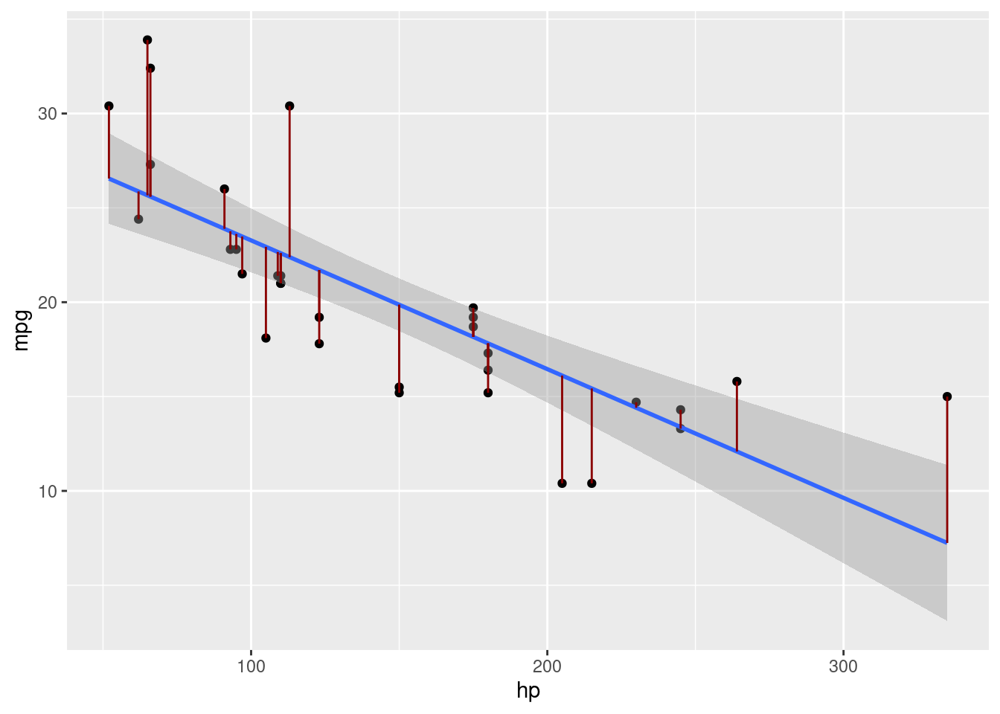

Chapter 8 Utilizing the linear model formula in R
Here we can also calculate the \(CI\) by utilizing the linear model funciton.
## [1] 170.4433##
## Call:
## lm(formula = hp ~ 1, data = mtcars)
##
## Residuals:
## Min 1Q Median 3Q Max
## -94.69 -50.19 -23.69 33.31 188.31
##
## Coefficients:
## Estimate Std. Error t value Pr(>|t|)
## (Intercept) 146.69 12.12 12.1 2.79e-13 ***
## ---
## Signif. codes: 0 '***' 0.001 '**' 0.01 '*' 0.05 '.' 0.1 ' ' 1
##
## Residual standard error: 68.56 on 31 degrees of freedom## 2.5 % 97.5 %
## (Intercept) 121.9679 171.4071References
Hatcher, L. (2013). Advanced statistics in research: Reading, understanding, and writing up data analysis results. Shadow Finch Media.
https://www.statology.org/t-distribution-table/
https://www.scribbr.com/frequently-asked-questions/critical-value-of-t-in-r/#:~:text=You%20can%20use%20the%20qt,the%20significance%20level%20by%20two.
8.0.1 Chi-square Assumptions
- Chi-Square test – statistical test used to compare observed results with expected results. This is a test of association.
- Used with Nominal or Categorical data.
- We can utilize Steven’s four scales of measurements to check our data.
8.0.1.1 Steven’s four scales of measurement
| Characteristic of Scale | Nominal | Ordinal | Interval | Ratio |
|---|---|---|---|---|
| Applies names or numbers to categories? | Yes | Yes | Yes | Yes |
| Orders categories according to quantity? | Yes | Yes | Yes | |
| Displays equal intervals between consecutive numbers? | Yes | Yes | ||
| Diplays a “true zero point?” | Yes |
8.0.2 Student Peformance Data Set Information
8.0.2.0.1 Attributes for both student-mat.csv (Math course) and student-por.csv (Portuguese language course) datasets:
- 1 school - student’s school (binary: ‘GP’ - Gabriel Pereira or ‘MS’ - Mousinho da Silveira)
- 2 sex - student’s sex (binary: ‘F’ - female or ‘M’ - male)
- 3 age - student’s age (numeric: from 15 to 22)
- 4 address - student’s home address type (binary: ‘U’ - urban or ‘R’ - rural)
- 5 famsize - family size (binary: ‘LE3’ - less or equal to 3 or ‘GT3’ - greater than 3)
- 6 Pstatus - parent’s cohabitation status (binary: ‘T’ - (living) together or ‘A’ - apart)
- 7 Medu - mother’s education (numeric: 0 - none, 1 - primary education (4th grade), 2 (5th to 9th grade), 3 (secondary education) or 4 (higher education))
- 8 Fedu - father’s education (numeric: 0 - none, 1 - primary education (4th grade), 2 (5th to 9th grade), 3 (secondary education) or 4 (higher education))
- 9 Mjob - mother’s job (nominal: ‘teacher’, ‘health’ care related, civil ‘services’ (e.g. administrative or police), ‘at_home’ or ‘other’)
- 10 Fjob - father’s job (nominal: ‘teacher’, ‘health’ care related, civil ‘services’ (e.g. administrative or police), ‘at_home’ or ‘other’)
- 11 reason - reason to choose this school (nominal: close to ‘home’, school ‘reputation’, ‘course’ preference or ‘other’)
- 12 guardian - student’s guardian (nominal: ‘mother’, ‘father’ or ‘other’)
- 13 traveltime - home to school travel time (numeric: 1 - <15 min., 2 - 15 to 30 min., 3 - 30 min. to 1 hour, or 4 - >1 hour)
- 14 studytime - weekly study time (numeric: 1 - <2 hours, 2 - 2 to 5 hours, 3 - 5 to 10 hours, or 4 - >10 hours)
- 15 failures - number of past class failures (numeric: n if 1<=n<3, else 4)
- 16 schoolsup - extra educational support (binary: yes or no)
- 17 famsup - family educational support (binary: yes or no)
- 18 paid - extra paid classes within the course subject (Math or Portuguese) (binary: yes or no)
- 19 activities - extra-curricular activities (binary: yes or no)
- 20 nursery - attended nursery school (binary: yes or no)
- 21 higher - wants to take higher education (binary: yes or no)
- 22 internet - Internet access at home (binary: yes or no)
- 23 romantic - with a romantic relationship (binary: yes or no)
- 24 famrel - quality of family relationships (numeric: from 1 - very bad to 5 - excellent)
- 25 freetime - free time after school (numeric: from 1 - very low to 5 - very high)
- 26 goout - going out with friends (numeric: from 1 - very low to 5 - very high)
- 27 Dalc - workday alcohol consumption (numeric: from 1 - very low to 5 - very high)
- 28 Walc - weekend alcohol consumption (numeric: from 1 - very low to 5 - very high)
- 29 health - current health status (numeric: from 1 - very bad to 5 - very good)
- 30 absences - number of school absences (numeric: from 0 to 93)
8.0.3 Look at the structure of our data
## 'data.frame': 395 obs. of 33 variables:
## $ school : chr "GP" "GP" "GP" "GP" ...
## $ sex : chr "F" "F" "F" "F" ...
## $ age : int 18 17 15 15 16 16 16 17 15 15 ...
## $ address : chr "U" "U" "U" "U" ...
## $ famsize : chr "GT3" "GT3" "LE3" "GT3" ...
## $ Pstatus : chr "A" "T" "T" "T" ...
## $ Medu : int 4 1 1 4 3 4 2 4 3 3 ...
## $ Fedu : int 4 1 1 2 3 3 2 4 2 4 ...
## $ Mjob : chr "at_home" "at_home" "at_home" "health" ...
## $ Fjob : chr "teacher" "other" "other" "services" ...
## $ reason : chr "course" "course" "other" "home" ...
## $ guardian : chr "mother" "father" "mother" "mother" ...
## $ traveltime: int 2 1 1 1 1 1 1 2 1 1 ...
## $ studytime : int 2 2 2 3 2 2 2 2 2 2 ...
## $ failures : int 0 0 3 0 0 0 0 0 0 0 ...
## $ schoolsup : chr "yes" "no" "yes" "no" ...
## $ famsup : chr "no" "yes" "no" "yes" ...
## $ paid : chr "no" "no" "yes" "yes" ...
## $ activities: chr "no" "no" "no" "yes" ...
## $ nursery : chr "yes" "no" "yes" "yes" ...
## $ higher : chr "yes" "yes" "yes" "yes" ...
## $ internet : chr "no" "yes" "yes" "yes" ...
## $ romantic : chr "no" "no" "no" "yes" ...
## $ famrel : int 4 5 4 3 4 5 4 4 4 5 ...
## $ freetime : int 3 3 3 2 3 4 4 1 2 5 ...
## $ goout : int 4 3 2 2 2 2 4 4 2 1 ...
## $ Dalc : int 1 1 2 1 1 1 1 1 1 1 ...
## $ Walc : int 1 1 3 1 2 2 1 1 1 1 ...
## $ health : int 3 3 3 5 5 5 3 1 1 5 ...
## $ absences : int 6 4 10 2 4 10 0 6 0 0 ...
## $ G1 : int 5 5 7 15 6 15 12 6 16 14 ...
## $ G2 : int 6 5 8 14 10 15 12 5 18 15 ...
## $ G3 : int 6 6 10 15 10 15 11 6 19 15 ...## [1] "There are 395 observations in our student data set."8.0.4 Chi-square
\[ x^2\;=\;\sum\frac{(O_{i}\;-\;E_{i})^2}{E_{i}} \\ \\ \] \[ x^2 = chi-squared\\ O_{i}=\;observed\;value \\ E_{i}=\;expected\;value \]
8.0.5 Chi-square Assumptions
- Chi-Square test – statistical test used to compare observed results with expected results. This is a test of association.
- Used with Nominal or Categorical data.
8.0.6 Chi-Square Test of Association
Here we want to investigate if there is an association between the type of job a mother has and access to the internet.
##
## no yes
## at_home 22 37
## health 2 32
## other 27 114
## services 12 91
## teacher 3 55##
## Pearson's Chi-squared test
##
## data: student$Mjob and student$internet
## X-squared = 28.861, df = 4, p-value = 8.341e-06mjob_internet<- xtabs(formula = ~Mjob+internet,data = student)
chisq_result<- chisq.test(mjob_internet ,correct = FALSE)
chisq_result$observed## internet
## Mjob no yes
## at_home 22 37
## health 2 32
## other 27 114
## services 12 91
## teacher 3 55## internet
## Mjob no yes
## at_home 9.858228 49.14177
## health 5.681013 28.31899
## other 23.559494 117.44051
## services 17.210127 85.78987
## teacher 9.691139 48.30886total_observed<- chisq_result$observed[,1]+chisq_result$observed[,2]
observed_expected<- data.frame(chisq_result$observed[,1],chisq_result$expected[,1],chisq_result$observed[,2],chisq_result$expected[,2],total_observed)
colnames(observed_expected) <- c("Observed","Expected","Observed","Expected","")total_observed<- chisq_result$observed[,1]+chisq_result$observed[,2]
###Create data frame from chi-square results
observed_expected<- data.frame(chisq_result$observed[,1],round(chisq_result$expected[,1],digits = 3),chisq_result$observed[,2],round(chisq_result$expected[,2],digits = 3),total_observed)
overall_total<- rbind(observed_expected, c(colSums(round(observed_expected[,1:5]))))
colnames(overall_total) <- c("Observed","Expected","Observed","Expected","")
rownames(overall_total) <- c("at home","health","other","services","teacher","Total")
###Create chi-square table
kable(x = overall_total) %>%
kable_styling(row_label_position = "l", full_width = F) %>%
footnote(general = paste0("",sprintf(r'($X^2$)')," = (",chisq_result$parameter,", n = 395) = ",round(chisq_result$statistic,3)," p = ",round(chisq_result$p.value,digits = 12))) %>%
add_header_above(c("Guardian", "Internet No" = 2, "Internet Yes" = 2,"Total"=1))| Observed | Expected | Observed | Expected | ||
|---|---|---|---|---|---|
| at home | 22 | 9.858 | 37 | 49.142 | 59 |
| health | 2 | 5.681 | 32 | 28.319 | 34 |
| other | 27 | 23.559 | 114 | 117.441 | 141 |
| services | 12 | 17.210 | 91 | 85.790 | 103 |
| teacher | 3 | 9.691 | 55 | 48.309 | 58 |
| Total | 66 | 67.000 | 329 | 328.000 | 395 |
| Note: | |||||
| \(X^2\) = (4, n = 395) = 28.861 p = 8.341138e-06 |
We can see that our \(X^2\) value is 28.861 and the p-value is \(p>.05\). We check our \(X^2\) value against the critical table value of 9.488. Since our \(X^2\) value 28.861 is above our critical table value of 9.488 we cannot reject our null hypothesis. Therefore there is no significant association between Mjob type and internet.
- In APA style, the proper reporting of chi-square test results is χ2 = (degrees of freedom, n = number of scores ) = chi-square score, p value.
- \(X^2\) (4, n = 395) = 28.86, p = 8.341e-06.
Chi-Square Critical Table
Next we can investigate if there is an association between the type of guardian a student has and access to the internet.
###Chi-square calculation
guardian_internet<- xtabs(formula = ~guardian+internet,data = student)
guard_int_chisq_result<- chisq.test(guardian_internet ,correct = FALSE)
guard_int_chisq_result##
## Pearson's Chi-squared test
##
## data: guardian_internet
## X-squared = 1.401, df = 2, p-value = 0.49638.0.6.0.2 Expected
| no | yes | |
|---|---|---|
| father | 15.037975 | 74.96203 |
| mother | 45.615190 | 227.38481 |
| other | 5.346835 | 26.65316 |
total_observed<- guard_int_chisq_result$observed[,1]+guard_int_chisq_result$observed[,2]
###Create data frame from chi-square results
observed_expected<- data.frame(guard_int_chisq_result$observed[,1],round(guard_int_chisq_result$expected[,1],digits = 3),guard_int_chisq_result$observed[,2],round(guard_int_chisq_result$expected[,2],digits = 3),total_observed)
overall_total<- rbind(observed_expected, c(colSums(round(observed_expected[,1:5]))))
colnames(overall_total) <- c("Observed","Expected","Observed","Expected","")
rownames(overall_total) <- c("father","other","mother","Total")
###Create chi-square table
kable(x = overall_total) %>%
kable_styling(row_label_position = "l", full_width = F) %>%
footnote(general = paste0("",sprintf(r'($X^2$)')," = (",guard_int_chisq_result$parameter,", n = 395) = ",round(guard_int_chisq_result$statistic,3),"p =",round(guard_int_chisq_result$p.value,4))) %>%
add_header_above(c("Guardian", "Internet No" = 2, "Internet Yes" = 2,"Total"=1))| Observed | Expected | Observed | Expected | ||
|---|---|---|---|---|---|
| father | 12 | 15.038 | 78 | 74.962 | 90 |
| other | 47 | 45.615 | 226 | 227.385 | 273 |
| mother | 7 | 5.347 | 25 | 26.653 | 32 |
| Total | 66 | 66.000 | 329 | 329.000 | 395 |
| Note: | |||||
| \(X^2\) = (2, n = 395) = 1.401p =0.4963 |
We can see that our \(X^2\) value is 1.401 and the p-value is \(p>.05\). We check our \(X^2\) value against the critical table value of 5.991. Since our \(X^2\) value 1.401 is below our critical table value of 5.991, therefore we cannot reject our null hypothesis. Therefore there is no significant relationship between guardian type and internet.
- In APA style, the proper reporting of chi-square test results is χ2 = (degrees of freedom, n = number of scores ) = chi-square score, p value.
- \(X^2\) (2, n = 395) = 1.401, p = 0.4963.
Chi-Square Critical Table
8.0.7 Correlation
\[\Large r_{xy} = \frac{\sum(x_{i}-\bar{x})(y_{i}-\bar{y})}{\sqrt{\sum(x_{i}-\bar{x})^2\sum(y_{i}-\bar{y})^2}}\]
8.0.8 Correlation Assumptions
The following assumptions are in place when utilizing the Pearson’s \(r\) when calculating a correlation coefficient.
- Interval or ratio scale – both variables should be quantitative variables. Both should be assessed on an interval or ratio scale.
- Normally-distributed sampling distribution – sampling distribution of the statistic should be normally distributed. Likely to be met if the sample data are approximately normal or the sample is large.
- Random Sample from bivariate normal distribution – the data points used to compute the Pearson \(r\) are the pairs of scores on the predictor and criterion variables. The data points should be a random sample drawn from a bivariate normal distribution.
8.0.8.0.1 Index of Effect Size Table
- Index of effect size – a statistic that conveys the strength of the association between a predictor variable and criterion variable.
- \(r\) – the larger the absolute value of the correlation coefficient the larger the “effect”.
| Correlation Coefficient | Effect Size |
|---|---|
| Small Effect | r +/- .10 |
| Medium Effect | r +/- .30 |
| Large Effect | r +/- .50 |
8.0.8.1 Correlation between student absences and first period grade
##
## Pearson's product-moment correlation
##
## data: student$absences and student$G1
## t = -0.6149, df = 393, p-value = 0.539
## alternative hypothesis: true correlation is not equal to 0
## 95 percent confidence interval:
## -0.12927845 0.06787576
## sample estimates:
## cor
## -0.0310029Here we can see that our correlation \(r\) = -0.031 and our \(p>.05\). Since our \(p-value\) is greater than \(0.05\) we can say there is no relationship between \(absences\) and \(G1\).
8.0.8.2 Correlation between student absences and final grade
##
## Pearson's product-moment correlation
##
## data: student$absences and student$G3
## t = 0.67933, df = 393, p-value = 0.4973
## alternative hypothesis: true correlation is not equal to 0
## 95 percent confidence interval:
## -0.06464215 0.13247070
## sample estimates:
## cor
## 0.03424732Here we can see that our correlation \(r\) = 0.034 and our \(p>.05\). Since our \(p-value\) is greater than \(0.05\) we can say there is no relationship between \(absences\) and \(G3\).
8.0.9 Point-biserial Correlation Assumptions
- Point-biserial correlation coefficient – appropriate when one variable is a roughly continuous , multi-value variable assessed on an interval or ratio scale and the other variable is a dichotomous(2 values) variable.
- must have a true dichotomy e.g. sex (male vs female)
8.0.9.1 Point-biserial correlation: Student gender and final grade
Here we are looking at a true dichotomy sex (male vs female) and the association with final \(G3\) grade. We need to recode the variable into a binary variable of \(1\) and \(0\) with \(1\) being \(Male\) and \(0\) being \(Female\).
##
## Pearson's product-moment correlation
##
## data: student$G3 and student$sexrecoded
## t = 2.062, df = 393, p-value = 0.03987
## alternative hypothesis: true correlation is not equal to 0
## 95 percent confidence interval:
## 0.004833966 0.200084200
## sample estimates:
## cor
## 0.10345568.0.10 Biserial Correlation
- Biserial correlation coefficient – appropriate in exactly the same situation where the point-biserial correlation would be used; one continuous variable and one dichotomous variable.
- appropriate when the dichotomous variable is not a true dichotomy e.g. pass/fail
8.0.10.1 Biserial Correaltion: Family educational support and final grade
Here we can look at whether there is an association between a students family support and their final grade. Again we need to re-code the variable so it is binary e.g. \(0\) and \(1\)
###Recode the variable into a binary variable
student$familysuprecoded <- ifelse(student$famsup=="yes",1,0)
cor.test(student$G3,student$familysuprecoded)##
## Pearson's product-moment correlation
##
## data: student$G3 and student$familysuprecoded
## t = -0.77686, df = 393, p-value = 0.4377
## alternative hypothesis: true correlation is not equal to 0
## 95 percent confidence interval:
## -0.13729770 0.05974472
## sample estimates:
## cor
## -0.039157158.0.10.2 Biserial Correaltion: Extra educational support and final grade
Here we can look at if there is an association between \(extra\;educational\; support\) \(schoolsup\) and final grade \(G3\) + Again we need to re-code the variable so it is binary e.g. \(0\) and \(1\)
student$schoolsuprecoded <- ifelse(student$schoolsup=="yes",1,0)
cor.test(student$G3,student$schoolsuprecoded)##
## Pearson's product-moment correlation
##
## data: student$G3 and student$schoolsuprecoded
## t = -1.6469, df = 393, p-value = 0.1004
## alternative hypothesis: true correlation is not equal to 0
## 95 percent confidence interval:
## -0.17998895 0.01601362
## sample estimates:
## cor
## -0.082788218.0.10.3 Biserial Correaltion: Attended nursery school and final grade
Here we can look at if there is an association between those who attended nursery school \(nursery\) and final grade \(G3\) + We need to re-code the variable so it is binary e.g. \(0\) and \(1\)
student$nurseryrecoded <- ifelse(student$nursery=="yes",1,0)
cor.test(student$G3,student$nurseryrecoded)##
## Pearson's product-moment correlation
##
## data: student$G3 and student$nurseryrecoded
## t = 1.0237, df = 393, p-value = 0.3066
## alternative hypothesis: true correlation is not equal to 0
## 95 percent confidence interval:
## -0.04734402 0.14947834
## sample estimates:
## cor
## 0.05156798.0.11 Spearman Correlation
Spearman correlation coefficient for ranked data (Spearman’s Rho or \(r_s\)) – displays the correlation between two variables whose values have been ranked.
In the student data set we see that studytime and traveltime have been ranked. Therefore we can utilize the Spearman’s Rho \(r_s\) to see the association between these variables and final grade \(G3\).
8.0.11.0.1 Spearman Correlation: Study time and final grade
## Warning in cor.test.default(student$studytime, student$traveltime, method =
## "spearman"): Cannot compute exact p-value with ties##
## Spearman's rank correlation rho
##
## data: student$studytime and student$traveltime
## S = 11360053, p-value = 0.03526
## alternative hypothesis: true rho is not equal to 0
## sample estimates:
## rho
## -0.10596948.0.11.0.2 Spearman Correlation: Travel time and final grade
## Warning in cor.test.default(student$traveltime, student$G3, method =
## "spearman"): Cannot compute exact p-value with ties##
## Spearman's rank correlation rho
##
## data: student$traveltime and student$G3
## S = 11509618, p-value = 0.01655
## alternative hypothesis: true rho is not equal to 0
## sample estimates:
## rho
## -0.12053048.0.12 Phi Coefficient - measurement of the degree of association between two binary variables
Assumptions for phi \(\phi\) coefficient:
Phi coefficient (\(\phi\))– appropriate when both variables are true dichotomous variables
E.g subject sex (males versus female) with sport-team status (team-member vs not a team-member)
| \(y=1\) | \(y=0\) | \(total\) | |
|---|---|---|---|
| \(x=1\) | \(n_{11}\) | \(n_{10}\) | \(n_{1\cdot}\) |
| \(x=0\) | \(n_{01}\) | \(n_{00}\) | \(n_{0\cdot}\) |
| \(total\) | \(n_{\cdot1}\) | \(n_{\cdot0}\) | \(n\) |
\[\Large Phi\;equation: \phi = \frac{n_{11} \cdot n_{00}\;-\;n_{10} \cdot n_{01}}{\sqrt{n_{1\cdot}n_{0\cdot} n_{\cdot0} n_{\cdot1}} }\]
| \(y=1\) | \(y=0\) | |
|---|---|---|
| \(x=1\) | \(A\) | \(B\) |
| \(x=0\) | \(C\) | \(D\) |
\[Phi\;equation: \phi = \frac{A \cdot D\;-\;B \cdot C}{\sqrt{(A+B)(C+D)(A+C)(B+D)} }\]
8.0.13 Phi coefficient:
First we will want to create a contingency of the table. We can do this in R simply by utilizing the \(table\) function and specifying two columns of \(dichotomous\) or \(binary\) variables.
##
## no yes
## F 38 170
## M 28 159##
## R U
## F 44 164
## M 44 143How to calculate a \(phi\) coefficient manually for \(gender\) and \(internet\)
# Φ = (AD-BC) / √(A+B)(C+D)(A+C)(B+D)
phi_coefficient = ((38*159)-(170*28))/sqrt((38+170)*(28+159)*(38+28)*(170+159))
print(phi_coefficient)## [1] 0.0441129We can measure the \(Phi\) coefficient similarly as to how we measure a Pearson’s \(r\) correlation. The closer to \(0\) there is no relationship. The closer to \(-1\) to \(1\) the stronger the relationship between the two dichotomous variables.
Here we can utilize the \(psych\) package to perform a \(Phi\) \(\phi\) coefficient analysis.
## [1] 0.0441129References
Hatcher, L. (2013). Advanced statistics in research: Reading, understanding, and writing up data analysis results. Shadow Finch Media.
Student Peformance (2014). https://archive.ics.uci.edu/dataset/320/student+performance
https://www.r-bloggers.com/2021/07/how-to-calculate-phi-coefficient-in-r/
William Revelle (2023). psych: Procedures for Psychological, Psychometric, and Personality Research. Northwestern University, Evanston, Illinois. R package version 2.3.9, https://CRAN.R-project.org/package=psych
8.0.14 Partial Correlation Formula
\[\Huge r_{xy,z} = \frac{r_{xy} - r_{xz} \cdot r_{yz}}{\sqrt{(1-r_{xz}^2) \cdot (1 - r_{yz}^2)}}\]
8.0.15 Partial Correlation
Partial correlation allows us to control for variables that may be confounding variables in a data set. This allows us to see what the correlation between two variables would be if we control for a single variable. We can also control for more than one variable.
- First order partial coefficient – is a correlation between two variables with just one additional variable partialed out of both.
- Higher order partial correlation – is a correlation between two variables with more than one control variable partialed out by both.
8.0.16 Partial Correlation Overview
When performing a single-order partial correlation we can simple do this by running a correlation on each variable in question. For our purposes we are utilizing the following variables horsepower (hp), mile pers gallon (mpg) and lastly cylinders (cy). If you would like to follow along we are utilizing the mtcars data set that is built into R.
- Predictor (X) (Independent Variable) = hp (horsepower)
- Criterition (Y) (Dependent Variable) = mpg (miles per gallon)
- Control (Z) (Control Variable) = cyl (cylinders)
8.0.17 Take a look at the structure of the mtcars data set
## 'data.frame': 32 obs. of 11 variables:
## $ mpg : num 21 21 22.8 21.4 18.7 18.1 14.3 24.4 22.8 19.2 ...
## $ cyl : num 6 6 4 6 8 6 8 4 4 6 ...
## $ disp: num 160 160 108 258 360 ...
## $ hp : num 110 110 93 110 175 105 245 62 95 123 ...
## $ drat: num 3.9 3.9 3.85 3.08 3.15 2.76 3.21 3.69 3.92 3.92 ...
## $ wt : num 2.62 2.88 2.32 3.21 3.44 ...
## $ qsec: num 16.5 17 18.6 19.4 17 ...
## $ vs : num 0 0 1 1 0 1 0 1 1 1 ...
## $ am : num 1 1 1 0 0 0 0 0 0 0 ...
## $ gear: num 4 4 4 3 3 3 3 4 4 4 ...
## $ carb: num 4 4 1 1 2 1 4 2 2 4 ...8.0.18 Description of the variables in the mtcars data set
A data frame with 32 observations on 11 (numeric) variables.
- Column 1 = mpg - Miles/(US) gallon
- Column 2 = cyl - Number of cylinders
- Column 3 = disp - Displacement (cu.in.)
- Column 4 = hp - Gross horsepower
- Column 5 = drat - Rear axle ratio
- Column 6 = wt - Weight (1000 lbs)
- Column 7 = qsec - 1/4 mile time
- Column 8 = vs - Engine (0 = V-shaped, 1 = straight)
- Column 9 = am - Transmission (0 = automatic, 1 = manual)
- Column 10 = gear - Number of forward gears
- Column 11 = carb - Number of carburetors
8.0.18.1 Correlation between Predictor and Criterion or X and Y
Here we find the correlation between our mpg and hp
##
## Pearson's product-moment correlation
##
## data: mtcars$mpg and mtcars$hp
## t = -6.7424, df = 30, p-value = 1.788e-07
## alternative hypothesis: true correlation is not equal to 0
## 95 percent confidence interval:
## -0.8852686 -0.5860994
## sample estimates:
## cor
## -0.77616848.0.18.2 Correlation between Predictor and Control or X and Z
Here we find the correlation between our hp and cyl
##
## Pearson's product-moment correlation
##
## data: mtcars$hp and mtcars$cyl
## t = 8.2286, df = 30, p-value = 3.478e-09
## alternative hypothesis: true correlation is not equal to 0
## 95 percent confidence interval:
## 0.6816016 0.9154223
## sample estimates:
## cor
## 0.83244758.0.18.3 Correlation between Criterion and Control or Y and Z
Here we find the correlation between our mpg and cyl
##
## Pearson's product-moment correlation
##
## data: mtcars$mpg and mtcars$cyl
## t = -8.9197, df = 30, p-value = 6.113e-10
## alternative hypothesis: true correlation is not equal to 0
## 95 percent confidence interval:
## -0.9257694 -0.7163171
## sample estimates:
## cor
## -0.8521628.0.19 Partial Correlation: Putting it altogether
###Partial Correlation when controlling for another variable
###X is hp
###Y is mpg
###Z is cyl
xy <- cor(mtcars$mpg,mtcars$hp)
xz <- cor(mtcars$hp,mtcars$cyl)
yz <- cor(mtcars$mpg,mtcars$cyl)
print(xy)## [1] -0.7761684## [1] 0.8324475## [1] -0.8521628.0.20 Calculate the numerator of the formula
\[\large r_{xy} - r_{xz} \cdot r_{yz} \]
\[\large -0.7761684 - (0.8324475 \cdot -0.852162) \]
## [1] -0.066788328.0.21 Calculate the denominator of the formula
\[\large \sqrt{(1-r_{xz}^2) \cdot (1 - r_{yz}^2)} \]
\[\large \sqrt{(1-0.8324475^2) \cdot (1 - (-0.852162)^2)} \]
## [1] 0.2899505## [1] -0.2303439## [1] -0.23Note: Round up at the very end of the calculation.
\[\large r = \frac{-0.06678832}{0.2899505} \] \[\large r = -0.230439 \]
8.0.22 Partial Correlation utilizing the ppcor package
First order partial coefficient – is a correlation between two variables with just one additional variable partialed out of both.
Here we can utilize the ppcor package as an easy button method to calculate the partial correlation. You will need to install the ppcor package via CRAN: ppcor package
###Partial Correlation when controlling for another variable
##Load the ppcor library
library(ppcor)## Loading required package: MASS##
## Attaching package: 'MASS'## The following object is masked from 'package:dplyr':
##
## select###ppcor function controlling for cylinders in the mtcars dataset
ppcor::pcor.test(mtcars$mpg, mtcars$hp, mtcars[, c("cyl")])## estimate p.value statistic n gp Method
## 1 -0.2303439 0.2125285 -1.274718 32 1 pearson8.0.22.1 Higher order partial correlation – is a correlation between two variables with more than one control variable partialed out by both.
###ppcor function controlling for cylinders,displacement in the mtcars dataset
ppcor::pcor.test(mtcars$mpg, mtcars$hp, mtcars[, c("cyl","disp")])## estimate p.value statistic n gp Method
## 1 -0.1860437 0.3249519 -1.001943 32 2 pearson8.0.22.2 References
Hatcher, L. (2013). Advanced statistics in research: Reading, understanding, and writing up data analysis results. Shadow Finch Media.
Henderson and Velleman (1981), Building multiple regression models interactively. Biometrics, 37, 391–411.
Kim S (2015). ppcor: Partial and Semi-Partial (Part) Correlation. R package version 1.1, https://CRAN.R-project.org/package=ppcor.
8.0.23 Bivariate Regression Terminology
Regression – is the process of estimating a best-fitting line that summarizes the relationship between a predictor variable (Independent Variable) and a criterion variable (Dependent Variable).
Regression Analysis – researchers fit a regression line to a sample of data, estimate the parameters of the regression equation (i.e., the constant and regression coefficient), and use the resulting equation to predict scores on a criterion variable.
Bivariate – means that the analyses discussed include just 2 variables, a predictor variable (the X variable), and a criterion variable (the Y variable).
Linear – refers to the fact, when the Y scores are plotted against the X scores, it should be possible to fit a best-fitting straight line through the center of the scores, as opposed to a best-fitting curved line.
8.0.24 Assumptions of Bivariate Regression
Linearity – should be able to fit a best-fitting straight line through the scatterplot.
Independence – each observation included in the sample should be drawn independently from the population of interest. Researchers should not have taken repeated measures on the same variable from the same participant.
Homogeneity of Variance (Homoscedasticity) – the variance of the Y scores should remain fairly constant at all values of X.
Normality – residuals of prediction should be normally distributed. Bivariate Normality – for any specific score on one of the variables, scores on the other variable should follow a normal distribution.
8.0.25 Bivariate Regression Formula
Here we have the formula for the bivariate regression equation. The regression equation takes the following form: \[\Large Regression\;Equation:\;\;\;\hat{y} = a + \beta(X) \] \[ \hat{y}\;\;–\;the\;predicted\;score\;on\;the\;criterion\;variable \] \[ a\;–\;the\;constant\;or\;the\;intercept\;of\;the\;regression\;equation. \] \[ \beta\;–\;the\;unstandardized\;regression\;coefficient.\\Represents\;the\;amount\;of\;change\;in\;Y\;that\;is \;associated\;with\;a\;one-unit\;change\;in\;X\;\\when\;both\;variables\;are\;in\;raw\;score\;form.\;Also\;known\;as\;the\;regression\;weight\;or\;slope. \]
8.0.26 Scatterplot of the data set
Here we plot our data to get a good look at the shape of the data set.
- Scatterplot – a graph that illustrates the nature of the relationship between two quantitative variables.
- X Axis – Predictor Variable - hp
- Y Axis – Criterion Variable - mpg
We can utilize the following plot function to create a basic scatterplot in R.
## The following object is masked from package:ggplot2:
##
## mpg
8.0.27 Calculate the Residual
Here we compute the residual by taking the actual y value and subtract the predicted y value. The residual for each observation is the difference between the predicted values of y and the actual values of y. Calculating the residual helps us to see if we have overpredicted or underpredicted for \(\hat{y}\).
\[\Large Residual = actual\;y\;value - predicted\;y\;value \]
\[\Large r_{1} = y_{i} - \hat{y_{i}} \]
## [1] "Predicted y Values"## Mazda RX4 Mazda RX4 Wag Datsun 710 Hornet 4 Drive
## 22.593750 22.593750 23.753631 22.593750
## Hornet Sportabout Valiant Duster 360 Merc 240D
## 18.158912 22.934891 13.382932 25.868707
## Merc 230 Merc 280 Merc 280C Merc 450SE
## 23.617174 21.706782 21.706782 17.817770
## Merc 450SL Merc 450SLC Cadillac Fleetwood Lincoln Continental
## 17.817770 17.817770 16.112064 15.429781
## Chrysler Imperial Fiat 128 Honda Civic Toyota Corolla
## 14.406357 25.595794 26.550990 25.664022
## Toyota Corona Dodge Challenger AMC Javelin Camaro Z28
## 23.480718 19.864619 19.864619 13.382932
## Pontiac Firebird Fiat X1-9 Porsche 914-2 Lotus Europa
## 18.158912 25.595794 23.890087 22.389065
## Ford Pantera L Ferrari Dino Maserati Bora Volvo 142E
## 12.086595 18.158912 7.242387 22.661978## [1] "Actual y Values"## [1] 21.0 21.0 22.8 21.4 18.7 18.1 14.3 24.4 22.8 19.2 17.8 16.4 17.3 15.2 10.4
## [16] 10.4 14.7 32.4 30.4 33.9 21.5 15.5 15.2 13.3 19.2 27.3 26.0 30.4 15.8 19.7
## [31] 15.0 21.4## [1] "Manually Calculated Residuals"## mtcars$mpg - mpg_prediction$fitted.values
## Mazda RX4 -1.59374995
## Mazda RX4 Wag -1.59374995
## Datsun 710 -0.95363068
## Hornet 4 Drive -1.19374995
## Hornet Sportabout 0.54108812
## Valiant -4.83489134
## Duster 360 0.91706759
## Merc 240D -1.46870730
## Merc 230 -0.81717412
## Merc 280 -2.50678234
## Merc 280C -3.90678234
## Merc 450SE -1.41777049
## Merc 450SL -0.51777049
## Merc 450SLC -2.61777049
## Cadillac Fleetwood -5.71206353
## Lincoln Continental -5.02978075
## Chrysler Imperial 0.29364342
## Fiat 128 6.80420581
## Honda Civic 3.84900992
## Toyota Corolla 8.23597754
## Toyota Corona -1.98071757
## Dodge Challenger -4.36461883
## AMC Javelin -4.66461883
## Camaro Z28 -0.08293241
## Pontiac Firebird 1.04108812
## Fiat X1-9 1.70420581
## Porsche 914-2 2.10991276
## Lotus Europa 8.01093488
## Ford Pantera L 3.71340487
## Ferrari Dino 1.54108812
## Maserati Bora 7.75761261
## Volvo 142E -1.26197823## [1] "Residual Values"## Mazda RX4 Mazda RX4 Wag Datsun 710 Hornet 4 Drive
## -1.59374995 -1.59374995 -0.95363068 -1.19374995
## Hornet Sportabout Valiant Duster 360 Merc 240D
## 0.54108812 -4.83489134 0.91706759 -1.46870730
## Merc 230 Merc 280 Merc 280C Merc 450SE
## -0.81717412 -2.50678234 -3.90678234 -1.41777049
## Merc 450SL Merc 450SLC Cadillac Fleetwood Lincoln Continental
## -0.51777049 -2.61777049 -5.71206353 -5.02978075
## Chrysler Imperial Fiat 128 Honda Civic Toyota Corolla
## 0.29364342 6.80420581 3.84900992 8.23597754
## Toyota Corona Dodge Challenger AMC Javelin Camaro Z28
## -1.98071757 -4.36461883 -4.66461883 -0.08293241
## Pontiac Firebird Fiat X1-9 Porsche 914-2 Lotus Europa
## 1.04108812 1.70420581 2.10991276 8.01093488
## Ford Pantera L Ferrari Dino Maserati Bora Volvo 142E
## 3.71340487 1.54108812 7.75761261 -1.261978238.0.28 Calculate the mean of the Y Values
Here we find the mean of our criterion (y) value of mpg.
\[\Large \bar{y} = \frac{\sum{y}}{n} \]
We can utilize the mean function to the calculate the mean of mpg (miles per gallon).
## [1] 20.090628.0.29 Coefficient of Determination or \({R^2}\)
Coefficient of Determination – indicates the percent of variance in the criterion variable that is accounted for by the predictor variable.
\[ Coefficient\;of\;Determination:\;\;R^2 =\;1-\; \frac{sum\;squared\;regression\;(SSR)}{sum\;squares\;total\;(SST)} \]
\[ =1- \frac{\sum(y_{i}\;-\;\hat{y_{i}})^2}{\sum(y_{i}\;-\;\overline{y})^2} \\ \\ y_{i} = actual\;y\;values \\ \hat{y_i} = predicted\;y\;values \\ \overline{y} = mean\;of\;y \\ \sum\;or\;sigma = sum \]
8.0.30 Calculate the numerator of the formula - Sum Squared Regression (SSR)
\[ \sum(y_{i}\;-\;\hat{y_{i}})^2 \]
## [1] 447.67438.0.31 Calculate the denominator of the formula - Sum Squares Total (SST)
\[ \sum(y_{i}\;-\;\overline{y})^2 \]
## [1] 1126.047\[ R^2 = 1- \frac{447.6743}{1126.047} \] \[ R^2 = 1- 0.3975627 \] \[ R^2 = 0.6024373 \\ R^2 = 0.6024 \]
8.0.32 Calculate the Adjusted-R Squared \(Adj.R^2\;or\;R^2_{adj}\)
\[ Adj.R^2\;or\;R^2_{adj} = 1 - (1-R^2)\;\cdot\;(n-1)/(n-p-1) \\ Adj.R^2\;or\;R^2_{adj} = 1 - (1-0.6024373)\;\cdot\;(32-1)/(32-1-1) \\ R^2 = coefficient\;of\;determination \\ n = number\;of\;observations \\ p=number\;of\;predictors \]
## [1] 0.58918528.0.33 Utilize the lm function in R to automate our work
Here we can utilize the lm function in R to perform our bivariate regression (simple linear regression). This will allow us to save the model to a variable and then utilize the $ (dollar sign) operator in R. The $ (dollar sign) operator allows us to pull out things we need such as the residuals and fitted values that are returned from the summary function.
8.0.33.1 Print the residuals of the model
## Mazda RX4 Mazda RX4 Wag Datsun 710 Hornet 4 Drive
## -1.59374995 -1.59374995 -0.95363068 -1.19374995
## Hornet Sportabout Valiant Duster 360 Merc 240D
## 0.54108812 -4.83489134 0.91706759 -1.46870730
## Merc 230 Merc 280 Merc 280C Merc 450SE
## -0.81717412 -2.50678234 -3.90678234 -1.41777049
## Merc 450SL Merc 450SLC Cadillac Fleetwood Lincoln Continental
## -0.51777049 -2.61777049 -5.71206353 -5.02978075
## Chrysler Imperial Fiat 128 Honda Civic Toyota Corolla
## 0.29364342 6.80420581 3.84900992 8.23597754
## Toyota Corona Dodge Challenger AMC Javelin Camaro Z28
## -1.98071757 -4.36461883 -4.66461883 -0.08293241
## Pontiac Firebird Fiat X1-9 Porsche 914-2 Lotus Europa
## 1.04108812 1.70420581 2.10991276 8.01093488
## Ford Pantera L Ferrari Dino Maserati Bora Volvo 142E
## 3.71340487 1.54108812 7.75761261 -1.261978238.0.33.3 Print the fitted values of the model
## Mazda RX4 Mazda RX4 Wag Datsun 710 Hornet 4 Drive
## 22.593750 22.593750 23.753631 22.593750
## Hornet Sportabout Valiant Duster 360 Merc 240D
## 18.158912 22.934891 13.382932 25.868707
## Merc 230 Merc 280 Merc 280C Merc 450SE
## 23.617174 21.706782 21.706782 17.817770
## Merc 450SL Merc 450SLC Cadillac Fleetwood Lincoln Continental
## 17.817770 17.817770 16.112064 15.429781
## Chrysler Imperial Fiat 128 Honda Civic Toyota Corolla
## 14.406357 25.595794 26.550990 25.664022
## Toyota Corona Dodge Challenger AMC Javelin Camaro Z28
## 23.480718 19.864619 19.864619 13.382932
## Pontiac Firebird Fiat X1-9 Porsche 914-2 Lotus Europa
## 18.158912 25.595794 23.890087 22.389065
## Ford Pantera L Ferrari Dino Maserati Bora Volvo 142E
## 12.086595 18.158912 7.242387 22.6619788.0.33.4 Putting it altogether
Here we can print out the summary of the model utilizing the summary function in R; summary(mpg_hp_model). We can also plot the predicted y values with the actual y values. Then we can draw a line between each of the predicted values and the actual values.This helps us visualize the amount of variation that is present between the predicted vs the actual values of y.
8.0.33.5 Plot our residuals and a best fitting line
Here we can utilize the ggplot2 package to plot our model. We can also plot the residuals along with a best fitting line.
mtcars %>% ggplot(aes(hp,mpg))+
geom_point()+
geom_smooth(method = "lm")+
geom_linerange(aes(ymax = mpg, ymin = mpg-resid),color="red")##
## Call:
## lm(formula = mpg ~ hp, data = mtcars)
##
## Residuals:
## Min 1Q Median 3Q Max
## -5.7121 -2.1122 -0.8854 1.5819 8.2360
##
## Coefficients:
## Estimate Std. Error t value Pr(>|t|)
## (Intercept) 30.09886 1.63392 18.421 < 2e-16 ***
## hp -0.06823 0.01012 -6.742 1.79e-07 ***
## ---
## Signif. codes: 0 '***' 0.001 '**' 0.01 '*' 0.05 '.' 0.1 ' ' 1
##
## Residual standard error: 3.863 on 30 degrees of freedom
## Multiple R-squared: 0.6024, Adjusted R-squared: 0.5892
## F-statistic: 45.46 on 1 and 30 DF, p-value: 1.788e-07## `geom_smooth()` using formula = 'y ~ x'
Now we can take a predictor value (X) and plug it in. We then are able to predict where our criterion value (Y) wil be.
\[ \hat{y}\;=\;30.09886\;+\;-0.06823(X) \]
\[ \hat{y}\;=\;30.09886\;+\;-0.06823(335) \] \[ \hat{y}\;=\;30.09886\;+\;-22.85705 \] \[ \hat{y} = 7.24 \]
8.0.34 Squaring the correlation \({r}\) to find the coefficient of determination \({R^2}\)
According to Hatcher (2013) we can simply square the correlation provided we are looking at only one predictor variable and one dependent variable. When we square the correlation coefficient this will give us the coefficient of determination.
8.0.36 Squaring the correlation coefficient
Here we can square the correlation coefficient \({r}\) and it will give us the coefficient of determination or \({R^2}\)
## [1] 0.6024373\({R^2} = 0.6024373\)
Here we can see we get the same value for the coefficient of determination \({R^2}\) by squaring the correlation as if we had utilized the lm function. However the lm function has advantages as it provides us with our p-value, F-statistic, and the intercept and the unstandardized regression coefficient.
8.0.37 Data Set Description
Motor Trend Car Road Tests
Description:
The data was extracted from the 1974 Motor Trend US magazine, and comprises fuel consumption and 10 aspects of automobile design and performance for 32 automobiles (1973–74 models).
References
Hatcher, L. (2013). Advanced statistics in research: Reading, understanding, and writing up data analysis results. Shadow Finch Media.
Henderson and Velleman (1981). dataset: Motor Trend Car Road Tests. R package version 4.3.1
Henderson and Velleman (1981), Building multiple regression models interactively. Biometrics, 37, 391–411.